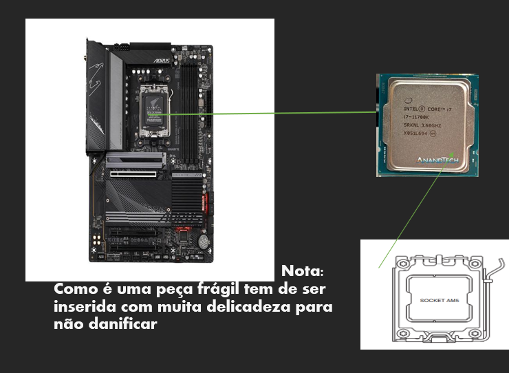
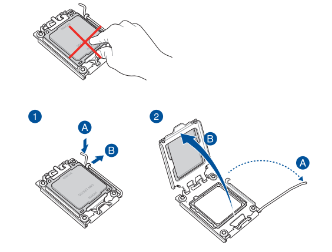
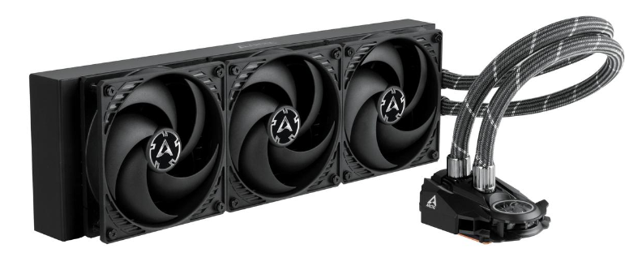
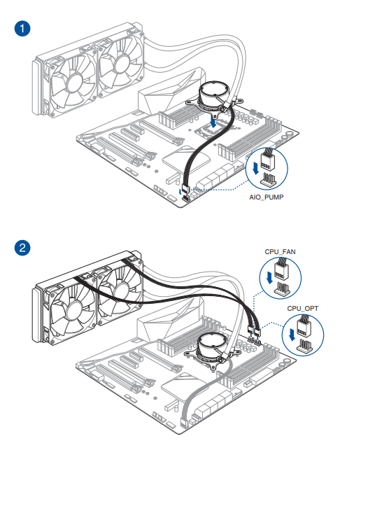
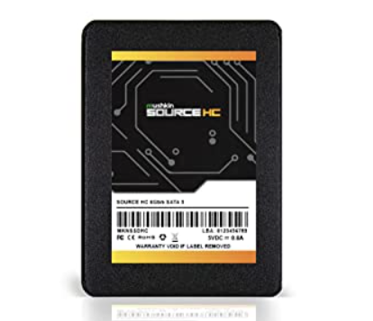
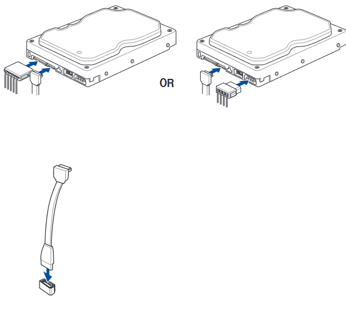
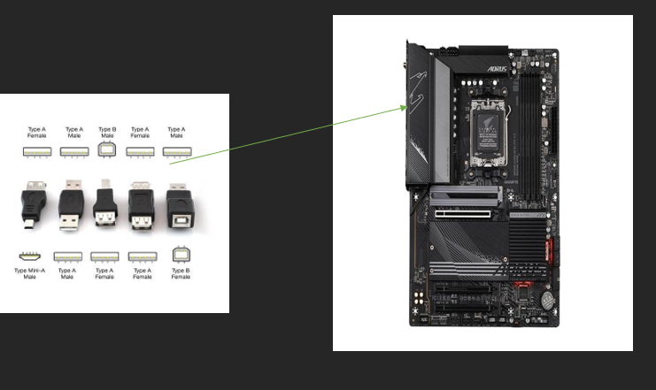
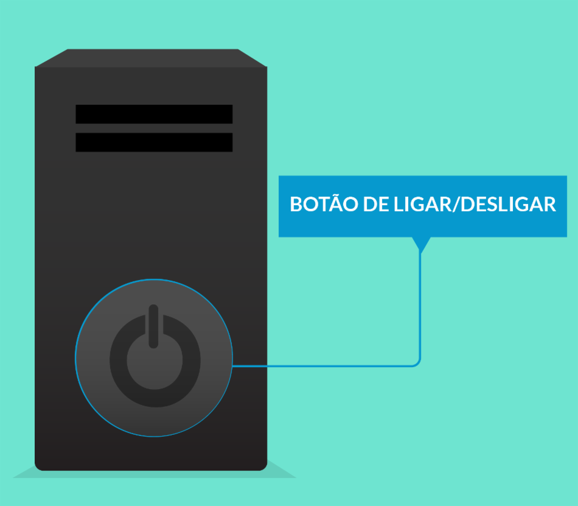

Primeiro, você precisa escolher as peças que deseja para o seu PC, incluindo processador, placa-mãe, memória RAM, placa de vídeo, disco rígido ou SSD, fonte de alimentação, case e outros componentes necessários.
Nota : é aconcelhavel escolher primeiramente a motherboard
Instale o processador na placa-mãe de acordo com as instruções do fabricante.
CPU escolhido:Intel Core i7-11700K. 2.


Passo 3: Instale a memória RAM
Insira os módulos de memória RAM nos slots da placa-mãe. Siga as orientações do manual da placa-mãe para garantir que a RAM esteja corretamente instalada.
NOTA: identifique os slot , geralmente esses slots são longos e localizados próximos ao processador, à maioria das placas mãe modernas possui 4 slots de memória. insira uma das memorias no slotDIMM-A2 e a outra no slot DIMM-B2.
Se você estiver usando uma placa de vídeo dedicada ( a montagem de uma placa de vídeo dedicada significa que você está inserindo uma placa de vídeo separada na placa-mãe do computador), insira-a no slot apropriado na placa-mãe. Certifique-se de conectá-la à fonte de alimentação, se necessário.
Nota: inserir uma placa de vídeo em uma placa mãe é simples, mas tem de ser feito com cuidado.
Passo 5: instale o cooler


cooler escolhido:: ARCTIC Liquid Freezer II 360 56.3 CFM Liquid CPU Cooler
Nota: o cooler de CPU é o mais comum. ele é montado diretamente no processador para resfriá-lo. o cooler é preso a placa mãe usando uma placa de montagem que corresponde ao soquete do CPU.
Passo 6:instale o disco
O slot de disco geralmente está localizado na parte inferior ou lateral do gabinete. Os gabinetes com suporte para várias unidades de armazenamento podem ter vários slots de disco.
O disco é conectado à motherboard por meio de um cabo SATA ou M.2. O cabo SATA é o tipo mais comum de cabo de disco. O cabo M.2 é um tipo de conector de disco que é mais fino e compacto.
Disco escolhido:ARCTIC Liquid Freezer II 360 56.3 CFM Liquid CPU Cooler


Passo 7 : Cabos USB

Cabos USB escolhidos:USB 32Gen2
NOTA: A porta USB tem um formato retangular e geralmente são marcadas com um símbolo USB que se parece com um tridente.
instale a placa-mãe no gabinete. Use os espaçadores fornecidos para evitar que a placa-mãe entre em contato direto com o gabinete, o que poderia causar curtos-circuitos.
Passo 9: Conecte a fonte de alimentação
Conecte a fonte de alimentação à placa-mãe, à placa de vídeo e a outros dispositivos, como unidades de armazenamento e unidades de DVD. Certifique-se de que todos os cabos estejam firmemente conectados.
Passo 10: Conecte os dispositivos de armazenamento
Conecte os dispositivos de armazenamento, como discos rígidos ou SSDs, à placa-mãe e à fonte de alimentação. Certifique-se de que os cabos estejam bem conectados
Passo 11: Conecte os periféricos
Conecte o teclado, o mouse, o monitor e outros periféricos ao PC.
Passo 12: Ligue o PC

Ligue o PC e verifique se ele inicializa corretamente. Se tudo estiver funcionando corretamente, você poderá começar a instalar o sistema operacional e os drivers.
Passo 13: Instale o sistema operacional e drivers
Insira o disco de instalação do sistema operacional e siga as instruções na tela. Depois, instale os drivers para os componentes do seu PC, como placa de vídeo, placa de som, etc.
Passo 14: Atualize o sistema
Certifique-se de que o sistema operacional e os drivers estejam atualizados para garantir um desempenho estável e seguro.
NOTA FINAL:
Montar um PC requer atenção aos detalhes e paciência. Certifique-se de ler o manual de instruções de cada componente e siga as diretrizes de segurança ao lidar com eletricidade estática. Se você não tiver experiência em montagem de PCs, pode ser útil pedir a ajuda de alguém com conhecimento técnico ou contratar um profissional para realizar a montagem.